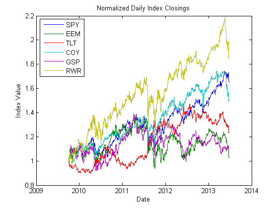
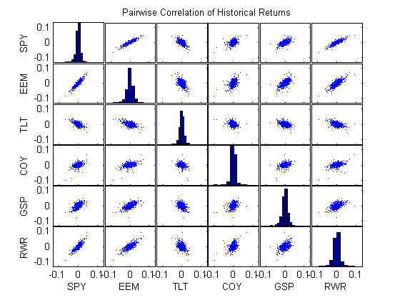
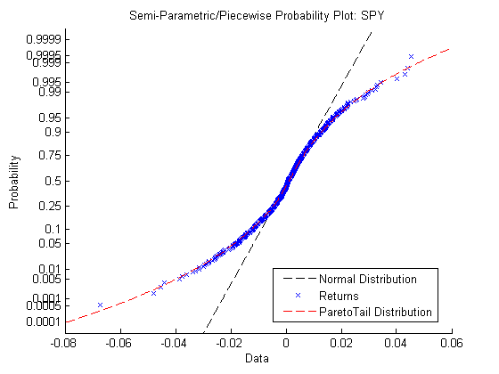
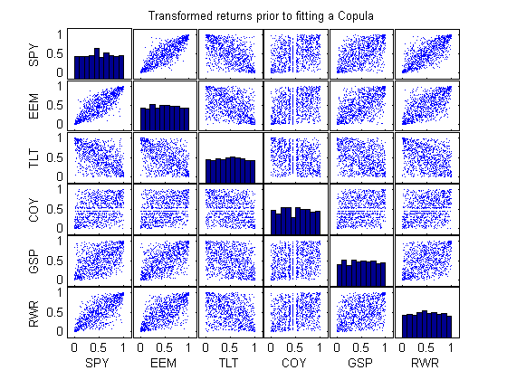
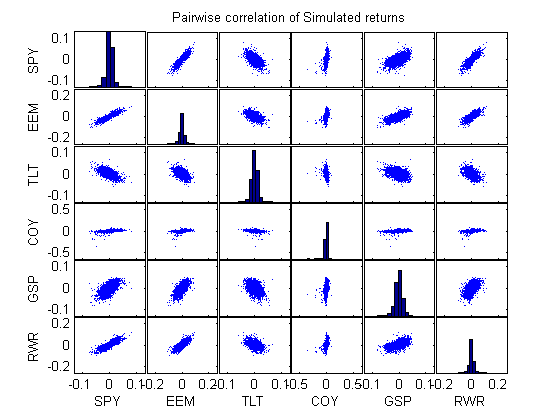
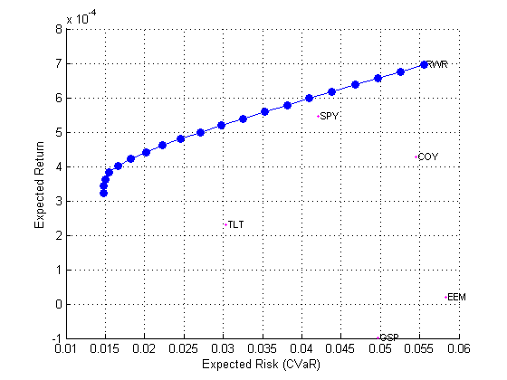
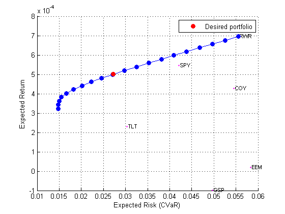

Optimizing Market Risk using Copula Simulation
This example demonstrates computing Value-at-Risk and Conditional Value-at-Risk (expected shortfall) for a portfolio using multivariate copula simulation with fat-tailed marginal distributions. The simulations are then used to compute an efficient frontier of optimal risk-return portfolios.
Contents
Import the Supporting Historical Dataset
Use the Datafeed Toolbox's APIs to import market data for the different asset classes that we will model in this exercise
- SPY: Large Cap US (S&P 500)
- EEM: Emerging Markets Equity
- TLT: 20+ Year Treas Bond (iShares Barclays)
- COY: US High-Yield Bond
- GSP: Commodities broad (iPath S&P GSCI Total Return Index)
- RWR: Real estate (REIT Index)
names = {'SPY', 'EEM', 'TLT', 'COY', 'GSP', 'RWR'};
startPeriod = '2009-10-01';
endPeriod = '2013-06-24';
[dates, prices, ds] = importFeedPrices(names, startPeriod, endPeriod);
nAssets = length(names);
Visualize Normalized Prices
The plots show the relative price movements of each index . The initial level of each index has been normalized to unity to facilitate the comparison of relative performance over the historical record.
normPrices = bsxfun(@rdivide, prices, prices(1,:)); plot(dates, normPrices), datetick('x'), xlabel('Date'), ylabel('Index Value'); title ('Normalized Daily Index Closings'); legend(names, 'Location', 'NorthWest')
Returns & Marginal Distributions
To prepare for copula modeling, characterize individually the distribution of returns of each index. Although the distribution of each return series may be characterized parametrically, it is useful to fit a semi-parametric model using a piecewise distribution with generalized Pareto tails. This uses Extreme Value Theory to better characterize the behavior in each tail.
returns = price2ret(prices); % convert prices to returns [~,ax] = plotmatrix(returns); title('Pairwise Correlation of Historical Returns'); for i = 1:nAssets ylabel(ax(i,1),names{i}); xlabel(ax(end,i),names{i}); end
The following code segment creates one object of type paretotails for each index return series. These Pareto tail objects encapsulate the estimates of the parametric Pareto lower tail, the non-parametric kernel-smoothed interior, and the parametric Pareto upper tail to construct a composite semi-parametric CDF for each index.
tailFraction = 0.1; % decimal fraction allocated to each tail marginal = cell(nAssets,1); % cell array of Pareto tail objects for i = 1:nAssets marginal{i} = paretotails(returns(:,i), tailFraction, 1 - tailFraction, 'kernel'); fprintf('Marginal distribution for %s:\n', names{i}); disp(marginal{i}); end
Marginal distribution for SPY:
Piecewise distribution with 3 segments
-Inf < x < -0.0125822 (0 < p < 0.1): lower tail, GPD(0.0380262,0.0084794)
-0.0125822 < x < 0.01286 (0.1 < p < 0.9): interpolated kernel smooth cdf
0.01286 < x < Inf (0.9 < p < 1): upper tail, GPD(0.0511828,0.00671413)
Marginal distribution for EEM:
Piecewise distribution with 3 segments
-Inf < x < -0.0186259 (0 < p < 0.1): lower tail, GPD(-0.00289033,0.0126097)
-0.0186259 < x < 0.0185703 (0.1 < p < 0.9): interpolated kernel smooth cdf
0.0185703 < x < Inf (0.9 < p < 1): upper tail, GPD(0.0326916,0.00981892)
Marginal distribution for TLT:
Piecewise distribution with 3 segments
-Inf < x < -0.0132814 (0 < p < 0.1): lower tail, GPD(0.137056,0.00414294)
-0.0132814 < x < 0.0128738 (0.1 < p < 0.9): interpolated kernel smooth cdf
0.0128738 < x < Inf (0.9 < p < 1): upper tail, GPD(0.027114,0.00583448)
Marginal distribution for COY:
Piecewise distribution with 3 segments
-Inf < x < -0.0105025 (0 < p < 0.1): lower tail, GPD(0.47441,0.00485515)
-0.0105025 < x < 0.011195 (0.1 < p < 0.9): interpolated kernel smooth cdf
0.011195 < x < Inf (0.9 < p < 1): upper tail, GPD(0.177151,0.00500233)
Marginal distribution for GSP:
Piecewise distribution with 3 segments
-Inf < x < -0.0161561 (0 < p < 0.1): lower tail, GPD(-0.0382412,0.0103328)
-0.0161561 < x < 0.016506 (0.1 < p < 0.9): interpolated kernel smooth cdf
0.016506 < x < Inf (0.9 < p < 1): upper tail, GPD(-0.134845,0.00778651)
Marginal distribution for RWR:
Piecewise distribution with 3 segments
-Inf < x < -0.0172097 (0 < p < 0.1): lower tail, GPD(-0.00540337,0.0114245)
-0.0172097 < x < 0.0168041 (0.1 < p < 0.9): interpolated kernel smooth cdf
0.0168041 < x < Inf (0.9 < p < 1): upper tail, GPD(0.0302092,0.0117143)
The resulting piecewise distribution object allows interpolation within the interior of the CDF and extrapolation (function evaluation) in each tail. Extrapolation allows estimation of quantiles outside the historical record, which is invaluable for risk management applications. Here we compare the fit produced by the paretoTail distribution to that of a normal distribution.
index = 1;
dist = marginal{index};
clf
probplot(returns(:,index));
h = probplot(gca, @dist.cdf);
set(h,'Color','r');
legend('Normal Distribution', 'Returns', 'ParetoTail Distribution', 'location', 'best');
title (['Semi-Parametric/Piecewise Probability Plot: ' names{index}])
 Copula Calibration
We use Statistics Toolbox function to calibrate and simulate a t copula to the data.
Using the daily index returns, estimate the parameters of the Gaussian and t copulas using the function copulafit. Since a t copula becomes a Gaussian copula as the scalar degrees of freedom parameter (DoF) becomes infinitely large, the two copulas are really of the same family, and therefore share a linear correlation matrix as a fundamental parameter.
Although calibration of the linear correlation matrix of a Gaussian copula is straightforward, the calibration of a t copula is not. For this reason, the Statistics Toolbox software offers two techniques to calibrate a t copula: The following code segment first transforms the daily centered returns to uniform variates by the piecewise, semi-parametric CDFs derived above. It then fits the Gaussian and t copulas to the transformed data:
U = zeros(size(returns)); % Uniform variates obtained by evaluating CDF at returns for i = 1:nAssets U(:,i) = marginal{i}.cdf(returns(:,i)); % transform each margin to uniform end clf [~,ax] = plotmatrix(U); title('Transformed returns prior to fitting a Copula'); for i = 1:nAssets ylabel(ax(i,1),names{i}); xlabel(ax(end,i),names{i}); end
Estimate parameters of a t copula. Note the relatively low degrees of freedom parameter obtained from the t copula calibration, indicating a significant departure from a Gaussian situation.
[rhoT, DoF] = copulafit('t', U, 'Method', 'ApproximateML')
rhoT =
1 0.88229 -0.59693 0.40875 0.58027 0.81485
0.88229 1 -0.52371 0.38906 0.63175 0.73608
-0.59693 -0.52371 1 -0.28404 -0.37285 -0.43114
0.40875 0.38906 -0.28404 1 0.2953 0.36207
0.58027 0.63175 -0.37285 0.2953 1 0.47097
0.81485 0.73608 -0.43114 0.36207 0.47097 1
DoF =
9.5014
The estimated correlation matrix is similar but not identical to the linear correlation matrix
corrcoef(returns) % linear correlation matrix of daily returns
ans =
1 0.89745 -0.61065 0.4677 0.59174 0.83717
0.89745 1 -0.54167 0.45612 0.63322 0.76712
-0.61065 -0.54167 1 -0.30377 -0.3918 -0.44429
0.4677 0.45612 -0.30377 1 0.33312 0.43525
0.59174 0.63322 -0.3918 0.33312 1 0.49161
0.83717 0.76712 -0.44429 0.43525 0.49161 1
Copula Simulation
Now that the copula parameters have been estimated, simulate jointly-dependent uniform variates using the function copularnd.
Then, by extrapolating the Pareto tails and interpolating the smoothed interior, transform the uniform variates derived from copularnd to daily centered returns via the inverse CDF of each index. These simulated centered returns are consistent with those obtained from the historical dataset. The returns are assumed to be independent in time, but at any point in time possess the dependence and rank correlation induced by the given copula.
nPoints = 10000; % # of simulated observations rng default R = zeros(nPoints, nAssets); % pre-allocate simulated returns array U = copularnd('t', rhoT, DoF, nPoints); % simulate U(0,1) from t copula for j = 1:nAssets R(:,j) = marginal{j}.icdf(U(:,j)); end [~,ax] = plotmatrix(R); title('Pairwise correlation of Simulated returns'); for i = 1:nAssets ylabel(ax(i,1),names{i}); xlabel(ax(end,i),names{i}); end
Compute Single-Period Simulated VaR
The multivariate simulations from the copula model can be used to compute the Value-at-Risk and Expected Shortfall (CVaR) of a sample portfolio.
% Sample portfolio component weights wts = [.1 .2 .3 .2 .1 .1]'; % Generate portfolio returns from simulated component returns portReturns = R * wts; % Compute VaR var = -prctile(portReturns, 1); cvar = -mean(portReturns(portReturns < -var)); % Compare to normal distribution R2 = mvnrnd(mean(returns), cov(returns), 10000); normReturns = R2 * wts; var2 = -prctile(normReturns, 1); cvar2 = -mean(normReturns(normReturns < -var2)); disp('Copula Value-at-Risk ----------------------'); fprintf('99%% VaR: %0.2f%%\n99%% CVaR: %0.2f%%\n\n', var * 100, cvar * 100); disp('Multivariate Normal Value-at-Risk ---------'); fprintf('99%% VaR: %0.2f%%\n99%% CVaR: %0.2f%%\n\n', var2 * 100, cvar2 * 100);
Copula Value-at-Risk ---------------------- 99% VaR: 1.78% 99% CVaR: 2.58% Multivariate Normal Value-at-Risk --------- 99% VaR: 1.49% 99% CVaR: 1.71%
Portfolio Optimization
Previously, we used the simulated returns to compute the risk of a sample portfolio. Instead, we could find an optimal portfolio (weights) that give us a minimum risk for a certain level of return. We can do this using the PortfolioCVaR framework.
p = PortfolioCVaR('ProbabilityLevel', .99, 'AssetNames', names); p = p.setScenarios(R); p = p.setDefaultConstraints(); wts = p.estimateFrontier(20); portRisk = p.estimatePortRisk(wts); portRet = p.estimatePortReturn(wts); clf visualizeFrontier(p, portRisk, portRet);
Compute portfolio with given level of return
tic; wt = p.estimateFrontierByReturn(.05/100); toc; pRisk = p.estimatePortRisk(wt); pRet = p.estimatePortReturn(wt); hold on; h = plot(pRisk, pRet, 'or', 'MarkerFaceColor', 'r'); legend(h,'Desired portfolio');
Elapsed time is 0.635017 seconds.